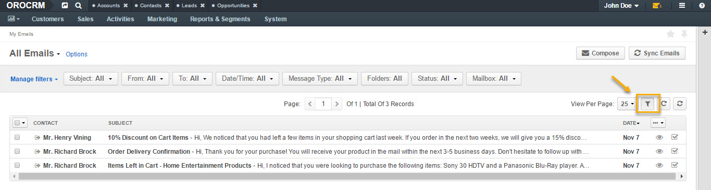
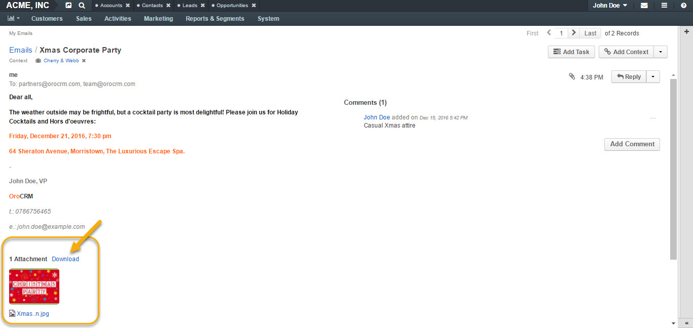

Emails¶
Emails are essential for conducting day-to-day business activities and communicating with co-workers or customers.
In this email guide, you will learn:
- Where and how to view and process emails.
- How to send an email.
- How emails can be related to CRM records.
- How to work with system mailboxes.
- How to setup email notifications.
Table of Contents
View and Process Your Emails¶
You can reach your emails in a number of ways, via:
- My Emails Page
- Recent Emails Menu Button
- Recent Emails Dashboard Widget
- Activities Section on a Record Page
My Emails Page¶
To reach My Emails page:
- Navigate to your user name in the top right corner.
- Click My Emails in the dropdown menu.
My Emails page has the following functionality available:
- Grid views for emails
- Compose button
- Sync Emails button
- Filters
- Options
Grid Views¶
There are four grid views for emails available by default:
- All Emails (contains all available emails).
- Inbox (contains newly delivered emails).
- Sent Mail (contains sent emails).
- Mailbox: Local (contains emails sent to the user’s personal email).
Filters¶
To enable filters for My emails page, click the corresponding button on the right, as illustrated below:
Filters sort your emails based on certain criteria, such as:
- Subject
- From
- To
- Date/Time
- Message Type
- Folders
- Status
- Mailbox
To find a specific record, click on the filter and select the necessary search parameter from the dropdown:

Options¶
Options save the filtered view as a separate page.
To save a page filtered according to the necessary criteria:
- Filter your emails according to your requirements using Filters.
- Click Options.
- Select Save As/Save As Default.
- Give your email page a name and click Save.
- The page will appear in the Emails grid dropdown list.


Sync Emails¶
By clicking Sync Emails in the top right corner, you will synchronize emails manually.
Compose A New Email¶
To compose a new email:
- Navigate to your user name in the top right corner.
- Click My Emails in the dropdown menu.
- Click Compose in the top right corner.
- A Send Email form will appear:
- To compose a new email, define the following fields in the form:
| Field | Description |
|---|---|
| From | The From field should contain the email address of the sender. Note that the primary email address is used as a default value and additional addresses are available in the selector for the From field. |
| To | The To field should contain the email(s) of the recipient(s). You can add more than one email to the field. Cc: Clicking Cc (carbon copy) will prompt a new field to appear to include more recipients to the emails whom the sender wishes to publicly inform of the message. Such recipients will be visible to all other recipients. Bcc: Clicking Bcc (blind carbon copy) will prompt a new field to appear to include those recipients whom the sender wishes to inform of the email discreetly. Such recipients are not visible to anyone. |
| Subject | Short, descriptive outline of the email message displayed in the mailbox of the recipients. |
| Apply Template | You can apply a pre-configured template for your email. |
| Type | Select the type of the message to be sent: HTML: The email will be coded so that the text is formatted and images are added. Plain: The email will contain plain text with no formatting or special layout options. |
| Body | Enter the text of your email. You can customize you email text using the following features: - Bold, Italic, Underline styles - Text color - Background color - Bullet List - Numbered List - Insert/Edit link - Source Code - Image Embed Upload - Fullscreen view |
| Add Signature | The signature may be added to any email you write in OroCRM. Your organization settings define whether the signature will be added automatically or manually. If you have a signature configured, you can add it by clicking Add Signature. For example: - John Doe, VP OroCRM t.: 0786756465 e.: john.doe@example.com For more information, see Add Signature To Your Email section of this guide. |
| Attach a file | You can attach a file from your PC or a related record. Click From a Record to re-use an attachment from another email in the thread or to choose an attachment assigned to the records. Click Upload and select the necessary file to be uploaded from your computer as an attachment to your email. . |
| Contexts | Context is any record or records that ha(s)ve meaningful relation to an email conversation. When you add context of a record to the email conversation, it will be displayed in the Activity section of that record’s page. Note: If an email has been created from an entity record view page (e.g. from a lead’s page), this record will be added as a context automatically. |
- Once done, click Send to send your email.
Save Unfinished Email¶
To save an unfinished email, minimize the email dialog window by clicking on the corresponding button in the top right corner of the email dialog window.

Your unfinished email will appear as a minimized window throughout sessions, as illustrated in the following screenshot:

You can save several of such emails as drafts:

View Emails¶
To open an email, click once either on the email or the View icon at the right end of the email.


From the page of the opened email, you can:
- Add Comment (add, edit or delete a comment to the email).
- Add Task (assign a task through an email).

- Mark Unread

- Add Context (define a record related to the email).

- Reply (reply directly to the sender).
- Reply All (reply to everyone in the email conversation).
- Forward (forward an email to a different recipient).


- Download Attachment (download the attached file, if available).

Recent Emails Menu Button¶
You can reach your emails by clicking on the Recent Emails button in the top right corner of the OroCRM window. A dropdown with unread emails will appear, as illustrated in the screenshot below:

Clicking on an email from the dropdown will redirect you to the page of the selected email.
The following features are available within the Recent Emails dropdown:
Mark All as Read (marks all unread emails as read).
Mark As Read/Unread
Clicking on the yellow envelope icon marks the selected email as read.
Clicking on the grey envelope icon marks the selected email as unread.
Reply All (launches a Reply email dialog window).

Recent Emails Dashboard Widget¶
Another way of reaching your emails is through a Recent Emails widget on your dashboard.
The Recent Emails widget added to your dashboard will have the following features:
- Inbox tab
- Sent tab
- Unread emails tab
- Reply
- View
Activity Section¶
All the emails sent to a record are displayed in and can be reached from the Activity section of the record’s page.
Clicking on the ellipsis menu of a record will launch the following action list for an email:
- Add Context (define a record related to the email).
- Reply (reply directly to the sender).
- Reply All (reply to everyone in the email conversation).
- Forward (forward an email to a different recipient).
- View Email (view the selected email).
Add Signature to Your Email¶
The signature may be added to any email you write in OroCRM. Your organization settings define whether the signature will be added automatically or manually.
To add a signature manually or modify a signature:
- Navigate to the main menu and click My User>My Configuration.
- In General Setup click Email Configuration.


- In the Email Configuration window find the Signature section and define the following fields:
| Field | Description |
|---|---|
| Signature Content | Specify the text and formatting of your signature (by default, the email signature body is empty). |
| Append Signature To Email Body | Defines whether a signature is added automatically or manually. |
- Click Save Settings in the top right corner, when you have finished configuring your signature.
Create an Email Template¶
With OroCRM, you can create email templates and use them to send numerous personalized emails. This way, for instance, you can create a single template with birthday wishes and assign it to an email campaign, so each of the subscribers with a birthday on a specific day would get a personalized email with congratulations.
To create an email template:
- Navigate to the main menu and click System>Emails>Templates.
- Click Create Template in the top right corner.
- Define the following fields in the Create Template form:
| Field | Description |
|---|---|
| Owner | Limits the list of users who can manage the template, subject to access permissions. |
| Template name | A name used to refer to the template in the system. |
| Type | Use HTML or plain text. |
| Entity name | Choose an entity the template is related to or keep it empty if the template is not related to any entity. If you want to use the template for autoresponses, the entity name value should be set to Email. |
- Define the email template. Click on the necessary variable on the right and drag it to the text box:
- You can preview your email by clicking Preview in the top right corner.
- To save the template, click Save and Close.
The following actions are available for an email template from the grid:
- Delete the template from the system:
- Get to the edit form of the template:
- Clone the template:
- You can edit the template details and save a new (cloned and edited) template.
- You can also create an email campaign, and send personalized emails based on your template to the pre-defined list of subscribers.
Note
If you want to track the user-activity related to the emails sent within the email campaign, add a piece of Tracking Website code to the email template.
To apply an email template to a new email, select the template from the dropdown of the Apply Template field, as shown below:

- You will see an Apply Template Confirmation message. Click Yes, Proceed to apply the selected template.
- You should now have your template applied to your email.

How to work with system mailboxes¶
Getting Access to a system mailbox¶
A system mailbox is a centralized box for emails that are not addressed to any specific person within a company. For example: a mailbox for support requests, for business inquiries, or for order support. With a system mailbox, you can automatically convert emails into cases or leads, and set-up auto-response rules with email templates.
System mailbox configuration depends on the access permissions defined for a user. All the users with defined roles and all the specifically defined users will have access to the system mailbox.
Users with access privileges to the system mailbox can view the mailbox by navigating to My User>My Emails in the top right corner and selecting the system mailbox from the grid view selector in the top left corner.
Automated processing of emails¶
Automated processing of emails allows to choose what actions will be performed with all the emails received in the mailbox. Out of the box three different actions are available. This functionality can be expanded through customization to match your business’s unique requirements:
- Do nothing. In this case no actions will be performed. Emails will be saved in the mailbox and can be accessed by those users with permission to do so.
- Convert to Lead. Letters will be saved in the mailbox and a new lead record will be created in OroCRM.
- Convert to Case. A new case record will be created in OroCRM based on the email received.
To enable such functionality, please refer to your administrator.
Auto-responses to incoming emails¶
Auto-responses feature allows you to set up automated replies to incoming emails. Using an auto-response is a great way to let your customers know that you have received their message, and that someone will be in touch soon.
Refer to your administrator to enable this functionality.
How to set up email notifications¶
With OroCRM, you can get email notifications when you wish to notify users each time a new activity has been assigned to them or need to drop a line to a manager when some customer details have been edited. You can specify conditions on which emails will be sent based on a pre-defined email template.
Notification rules define situations to generate and send the emails.
A notification rule can only be created for a specific email template available in the system.
To create a notification rule:
- Go to System> Emails>Notification Rules.

- Click Create Notification Rule in the top right corner.
- Define the general details of the emails to be sent and the list of recipients.
The Create Notification Rule page has two sections:
- General
- Recipient List
General¶
The following details must be defined in the General section.
| Field | Description |
|---|---|
| Entity name | Choose an entity from the list. Only entities that have templates available are listed. If you do not see the necessary entity on the list this list, create a notification template for it first. |
| Event name | Choose the event that will trigger the mailing. The following values are possible: - Entity create: a new record of the entity has been created. - Entity remove: a record of the entity has been removed. - Entity update: a recod of the entity has been edited |
| Template | Choose the template for which the rule will be created. |

Recipient List¶
The Recipient List section defines a list of users to whom the email will be sent when the rule is met.
You can define one specific user and/or user groups and/or a specific email address.
If the Owner box is checked, the email will be sent to the user who is assigned as an owner of the entity record for which the event has taken place.
Note that the Owner box is only available for the entities with the ownership type set to User.

Click Save and Close when you have finished configuring the rule.
All available rules are displayed in the All Notification Rules grid in System>Emails>Notification Rules.

From this grid you can:
- Delete a notification rule from the system: .
- Get to the edit form of the notification rule: .